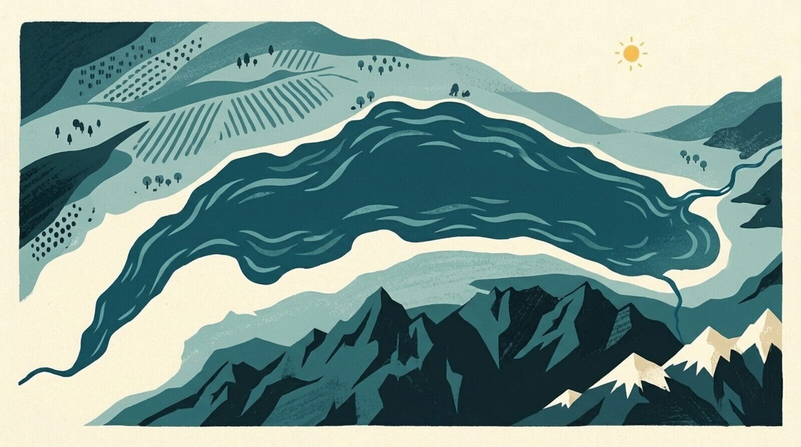

Kurz gesagt
Mein See zeigt die Wassertemperatur in 70 cm Tiefe vor jedem der 65 Badeplätze, alle drei Stunden aus dem Alplakes-Modell der Eawag aktualisiert. Sie kann sich am selben Tag von Badeplatz zu Badeplatz um mehrere Grad unterscheiden und abrupt fallen, wenn ein starker Wind kaltes Tiefenwasser nach oben bringt: das ist das «Upwelling».
Heute Morgen (27. November 2026) lag das Wasser im Genfersee zwischen 7.0 °C und 9.9 °C, je nach Badeplatz, 70 cm unter der Oberfläche (Modell Alplakes).
Wie wird die Temperatur des Genfersees berechnet?
Die Zahlen stammen von Alplakes, der Plattform der Eawag (dem Wasserforschungsinstitut des ETH-Bereichs). Sie kombiniert numerische Seenmodelle und Satellitendaten, um die Wassertemperatur in verschiedenen Tiefen zu berechnen, mit Prognosen für mehrere Tage. Die Eawag nennt für grosse Seen einen Fehler von etwa 1 °C an der Oberfläche.
Mein See liest den Modellwert vor jedem Badeplatz in 70 cm Tiefe, alle drei Stunden. Die Daten sind unter der Lizenz CC BY 4.0 veröffentlicht.
Warum 70 cm unter der Oberfläche?
Weil das ungefähr das Wasser ist, in dem man schwimmt. Der allerobersten Film erwärmt oder kühlt sich mit Sonne und Luft sehr schnell ab; etwas tiefer ist der Wert stabiler und näher an dem, was man beim Hineingehen spürt.
Warum ist das Wasser nicht überall gleich warm?
Der Genfersee ist gross und tief, und der Wind verschiebt darin das Oberflächenwasser. Wenn ein starker Wind lange aus derselben Richtung weht, schiebt er das warme Oberflächenwasser weg; zum Ausgleich steigt kaltes Tiefenwasser nahe einzelner Ufer auf. Die Wissenschaft nennt dieses Phänomen Upwelling.
- Im Juni 2025 fiel das Wasser bei Genf innert weniger Tage von 19 auf 11 °C, unter einem starken, anhaltenden Südwestwind; Alplakes hatte es mehrere Tage im Voraus vorhergesagt (Eawag).
- Der bekannte Rekord: Ende Juni 2017 fiel das Wasser an den Bains des Pâquis innert zwei Tagen von 23 auf genau 8 °C (Eawag).
Das Ergebnis: Am selben Tag können zwei Badeplätze mehrere Grad auseinanderliegen. Der aktuelle Unterschied wird weiter unten berechnet.
Wo sieht man die Temperatur des Genfersees live?
Ein Beispiel: August 2023
Anfang August 2023 hatte der Genfersee bei Montreux 23 °C und im Petit-Lac bei Genf 9 °C. Da weder Regen noch Hochwasser das erklären, sieht MeteoSchweiz darin aufsteigendes kaltes Tiefenwasser («Upwelling»), einen Kontrast, den sie als aussergewöhnlich bezeichnet. Die Temperatur desselben Sees kann also von Ufer zu Ufer stark schwanken.
Monat für Monat
Im Mittel liegt das Wasser von Juni bis September über 20 °C.
| Monat | Mittel | Kältester Tag | Wärmster Tag |
|---|---|---|---|
| Januar | 7.5 °C | 7.0 °C | 8.4 °C |
| Februar | 7.0 °C | 6.8 °C | 7.1 °C |
| März | 7.3 °C | 6.8 °C | 8.1 °C |
| April | 9.0 °C | 7.4 °C | 12.3 °C |
| Mai | 13.4 °C | 9.7 °C | 17.7 °C |
| Juni | 20.3 °C | 15.6 °C | 25.2 °C |
| Juli | 22.9 °C | 19.7 °C | 25.6 °C |
| August | 23.2 °C | 20.8 °C | 25.1 °C |
| September | 20.1 °C | 16.0 °C | 23.0 °C |
| Oktober | 15.6 °C | 13.1 °C | 19.4 °C |
| November | 11.8 °C | 9.6 °C | 14.6 °C |
| Dezember | 8.7 °C | 7.6 °C | 10.0 °C |
Tagesmittel 70 cm unter der Oberfläche, ein Wert für den ganzen See, Jahre 2023–2025 (Simstrat-Modell von Alplakes, Eawag). In Ufernähe und bei Sonne kann das Wasser wärmer sein.
In der App Mein See, gratis und ohne Konto, mit Wind, Bise und einem Urteil für jede Aktivität. Die Liste der Badeplätze bietet ausserdem eine Seite pro Badeplatz, von Genf bis Saint-Gingolph und von Évian bis Chens-sur-Léman.
Das Wasser des Sees im Moment
Die Wassertemperatur jedes Badeplatzes steht in der App Mein See, alle drei Stunden aktualisiert.